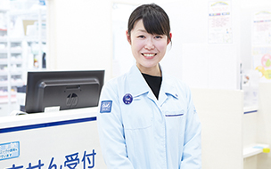
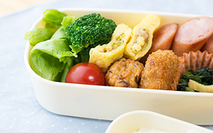

-
出勤
- 開局準備
- 出勤し白衣に着替え、開局に向けて患者さまを迎えるための準備をします。レジや調剤機器、パソコンなどの準備と、店舗内の掃除から医療事務の1日が始まります。
-
薬局開局
- 薬局開局
- 準備を終えて開局です！今日も1日頑張りましょう！

-
業務開始
- 医療事務業務開始
- 患者さまが来局されたらまずは処方箋を受け取り、保険証やお薬手帳の確認をします。初めて来局の方にはアンケートのご案内も医療事務の仕事です。
-
休憩
- お昼休憩
- 薬局の混雑状況に合わせて順番にお昼休憩をとります。休憩室でお弁当を食べる場合もあれば、外出して食事することもあります。

-
業務開始
- 医療事務業務開始
- 病院の午後の診察開始に伴い患者さまが徐々に来局されます。
待合室の状況を見ながら薬剤師の補助として集薬作業も行います。その他、健康補助食品やサプリメント、一般用医薬品などの商品の発注業務や販売も行います。
-
薬局閉局
- 閉局作業
- 患者さまが全員帰られた後、看板の片づけや戸締り等の閉局作業を始めます。
-
閉局後の
業務開始- レジ締め・金銭管理作業
- 今日1日の売り上げを確認し、レジの精算処理をします。売り上げ管理をするのも医療事務の重要な仕事のひとつです。
-
退勤
- 業務終了
- パソコンを閉じて片づけをしたら業務終了です！
今日も1日お疲れ様でした！
- レセプト請求業務
- 調剤報酬に基づき、月に1回各支払機関へ請求を行います。
適正に請求を行うため、請求内容に間違いや不備がないか1件ずつ医療事務が責任を持って確認します。日々の業務の振り返りにもなります。